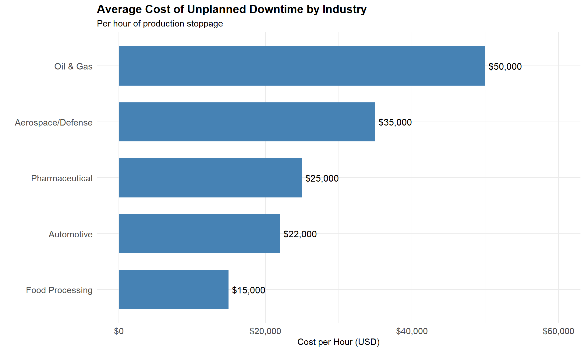
15 Troubleshooting and Root Cause Analysis
15.1 Learning Objectives
After completing this chapter, you will be able to:
- Apply systematic troubleshooting methodologies to diagnose equipment and process failures
- Distinguish between symptoms, immediate causes, and root causes
- Use the 5 Whys technique to drill down to fundamental causes
- Construct and analyze Ishikawa (fishbone) diagrams
- Apply Fault Tree Analysis (FTA) to complex failure scenarios
- Use Pareto analysis to prioritize problem-solving efforts
- Implement the 8D problem-solving methodology
- Document findings and implement effective corrective actions
- Prevent problem recurrence through systemic improvements
15.2 Introduction to Troubleshooting
Troubleshooting is the systematic process of identifying, diagnosing, and resolving problems in equipment, processes, or systems. For electromechanical technicians, effective troubleshooting is perhaps the most valuable skill you can develop.
15.2.1 The Cost of Downtime
Equipment failures and process problems have significant financial impacts:
15.2.2 Reactive vs. Proactive Problem Solving
| Aspect | Reactive Approach | Proactive Approach |
|---|---|---|
| Timing | After failure occurs | Before or early in failure |
| Focus | Quick fix to restore operation | Root cause elimination |
| Stress Level | High - production pressure | Lower - planned approach |
| Cost | High - emergency repairs | Lower - scheduled work |
| Learning | Limited - rush to fix | High - thorough analysis |
| Documentation | Often skipped | Systematic and complete |
Think About It: Why do organizations often default to reactive troubleshooting?
Common reasons include: - Time pressure: Production demands make it tempting to apply quick fixes - Lack of training: Technicians may not know RCA methodologies - Reward systems: Organizations may reward “firefighters” who quickly restore production - Missing data: Without good records, patterns are hard to identify - Culture: “We’ve always done it this way” mentality
The irony is that reactive troubleshooting actually costs more time in the long run due to recurring problems.15.3 Systematic Troubleshooting Methodology
Effective troubleshooting follows a structured approach rather than random trial-and-error.
15.3.1 The DMAIC Troubleshooting Framework
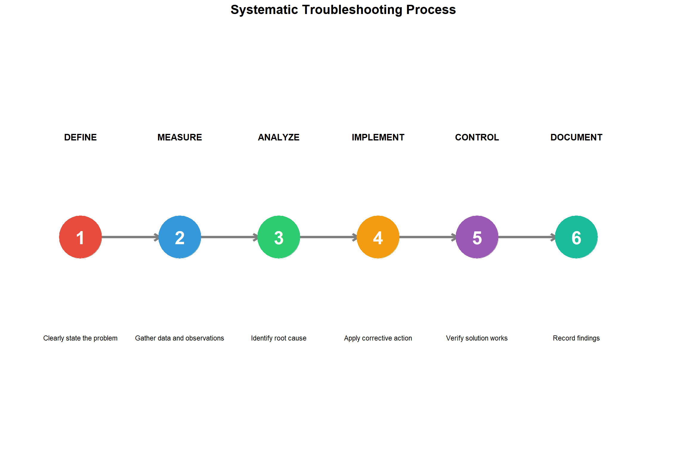
15.3.2 Step 1: Define the Problem
A well-defined problem is half-solved. Use the 5W2H method:
| Question | What to Ask | Example Response |
|---|---|---|
| WHAT | What is the problem? What is happening vs. what should happen? | Motor overheating on conveyor line 3 |
| WHERE | Where does the problem occur? Location, machine, station? | Discharge end of conveyor, motor housing |
| WHEN | When did it start? When does it occur? Continuous or intermittent? | Started Monday, occurs after 2 hours of operation |
| WHO | Who discovered it? Who is affected? Who was operating? | Operator noticed, maintenance called, affects packaging dept |
| WHY | Why is this a problem? What is the impact? | Risk of motor failure, line stoppage, safety hazard |
| HOW | How was the problem detected? How is it manifesting? | Detected by high-temp alarm at 85°C |
| HOW MUCH | How often? How many units affected? What is the magnitude? | Occurs every day, 100% of shifts, 15°C above normal |
15.3.3 Problem Statement Template
Good Problem Statement Format: “[WHAT] is occurring at [WHERE] since [WHEN], affecting [WHO/WHAT], with a magnitude of [HOW MUCH].”
Example: > “Motor overheating (85°C vs. normal 70°C) is occurring at Conveyor Line 3 discharge motor since Monday morning, affecting packaging department production, with the condition occurring every shift after approximately 2 hours of operation.”
Practice: Write a problem statement for this scenario
Scenario: An injection molding machine is producing parts with short shots (incomplete fill). The problem was noticed by the quality inspector during the night shift. About 15% of parts are affected. The issue seems worse when running the larger 500g parts compared to the smaller 200g parts.
Sample Problem Statement: “Short shots (incomplete cavity fill) are occurring on Injection Molding Machine #4 since night shift on Tuesday, affecting 15% of parts produced, with the defect rate increasing significantly when running 500g parts compared to 200g parts.”15.3.4 Step 2: Gather Data and Observations
Before making any changes, collect information systematically:
| Data Source | What to Check | Tools/Methods |
|---|---|---|
| Visual Inspection | Physical condition, wear, contamination, alignment, damage | Flashlight, mirror, magnifier, camera |
| Operator Interview | What changed? When did it start? Any unusual events? | Open-ended questions, active listening |
| Machine Parameters | Temperatures, pressures, speeds, currents, positions | HMI screens, gauges, multimeter, thermal camera |
| Historical Records | Maintenance logs, previous repairs, similar issues | CMMS, logbooks, work orders |
| Product/Output | Defect patterns, measurements, reject rates | Calipers, gauges, CMM, visual inspection |
| Environmental | Temperature, humidity, vibration, power quality | Thermometer, hygrometer, vibration analyzer |
15.3.5 The “Change Analysis” Approach
Many problems are caused by changes. Ask:
- What changed recently?
- New materials, suppliers, or batches?
- New operators or different shifts?
- Maintenance performed?
- Environmental changes (weather, season)?
- Software updates or parameter changes?
- New products or recipes running?
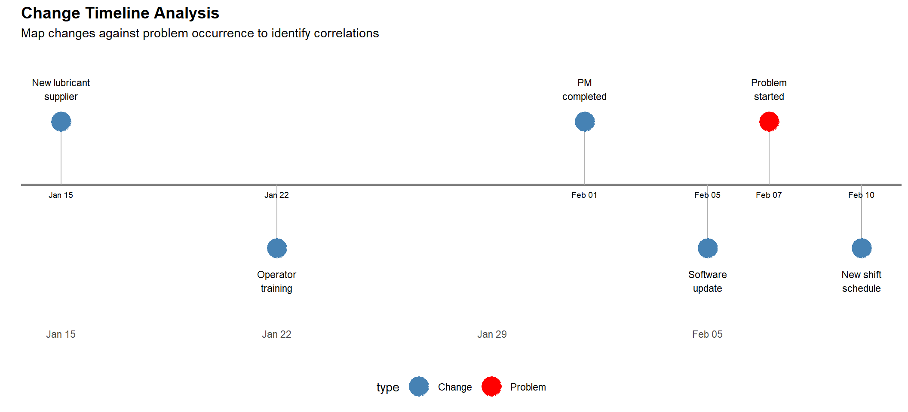
15.4 Understanding Root Cause vs. Symptoms
A critical concept in troubleshooting is distinguishing between different levels of causation.
15.4.1 The Causation Hierarchy
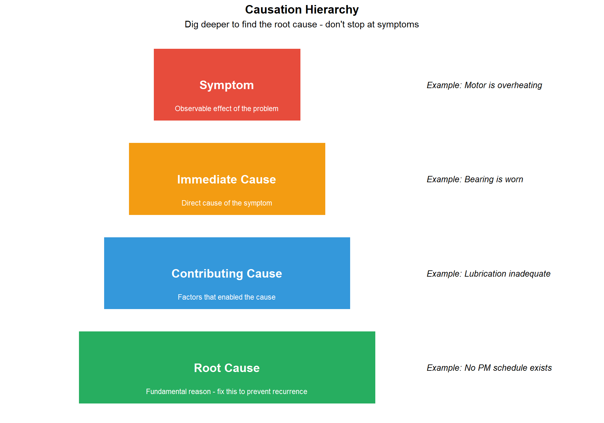
15.4.2 Why Finding Root Cause Matters
| Fix Level | Action Taken | Immediate Result | Recurrence | Short-term Cost | Long-term Cost |
|---|---|---|---|---|---|
| Symptom | Add cooling fan to motor | Motor runs cooler temporarily | Problem returns in days | $50 | $5000+ (repeated failures) |
| Immediate Cause | Replace worn bearing | Motor works for a while | Problem returns in months | $200 | $2400 (annual replacements) |
| Root Cause | Implement PM schedule with lubrication tasks | Problem eliminated permanently | Problem does not recur | $500 | $500 (one-time implementation) |
15.5 The 5 Whys Technique
The 5 Whys is a simple but powerful technique developed by Sakichi Toyoda and used within Toyota’s manufacturing methods.
15.5.1 How It Works
- State the problem
- Ask “Why?” to identify the cause
- Ask “Why?” again about that cause
- Continue asking “Why?” until you reach the root cause
- Typically requires 5 iterations (sometimes more, sometimes less)
15.5.2 5 Whys Example: Production Line Stoppage
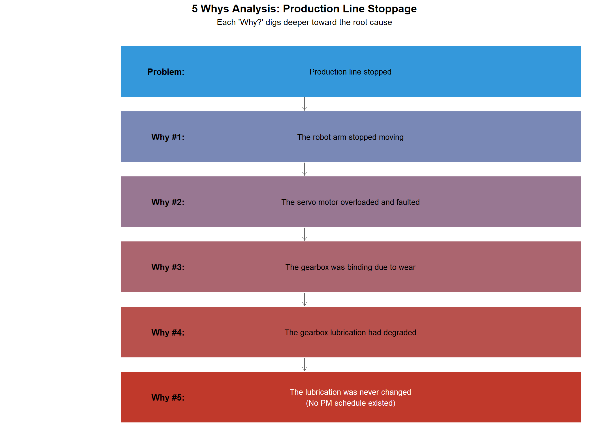
15.5.3 5 Whys Template
| Step | Description | Typical Cause Type |
|---|---|---|
| Problem Statement | Clear, specific description of what happened | Symptom |
| Why #1 | First-level cause (usually technical/physical) | Physical |
| Why #2 | Why did that first cause occur? | Physical/Human |
| Why #3 | Why did the second cause occur? | Human/Process |
| Why #4 | Why did the third cause occur? | Process/System |
| Why #5 | Why did the fourth cause occur? | System/Culture |
| Root Cause | The fundamental cause that, if fixed, prevents recurrence | Root |
15.5.4 Multiple Branches in 5 Whys
Sometimes a problem has multiple causes. When you encounter this, branch your analysis:
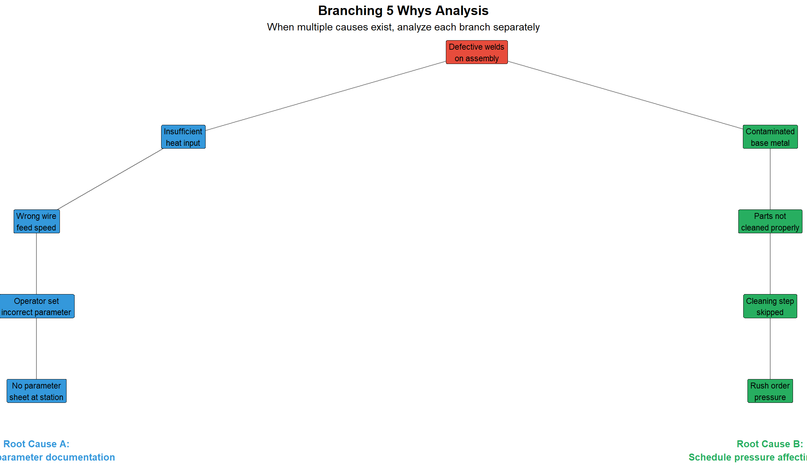
Practice Exercise: Perform a 5 Whys Analysis
Scenario: A CNC machine produced 50 parts that were all 0.5mm undersize on a critical diameter.
Try to complete the 5 Whys analysis before looking at the sample answer below.
Sample Analysis:
- Problem: CNC produced 50 undersize parts
- Why #1: The tool offset was set incorrectly
- Why #2: The operator entered the wrong offset value
- Why #3: The operator misread the setup sheet
- Why #4: The setup sheet had poor formatting and small print
- Why #5: No standard format exists for setup documentation
Root Cause: Lack of standardized, clear setup documentation
Corrective Actions: - Create standardized setup sheet template with large, clear fonts - Add visual verification step (photo of correct setup) - Implement first-piece inspection requirement before production run15.6 Ishikawa (Fishbone) Diagram
The Ishikawa diagram, also called a fishbone diagram or cause-and-effect diagram, was developed by Kaoru Ishikawa in the 1960s. It provides a structured way to brainstorm and categorize potential causes.
15.6.1 The 6M Categories
Manufacturing problems are typically organized using the 6M categories:
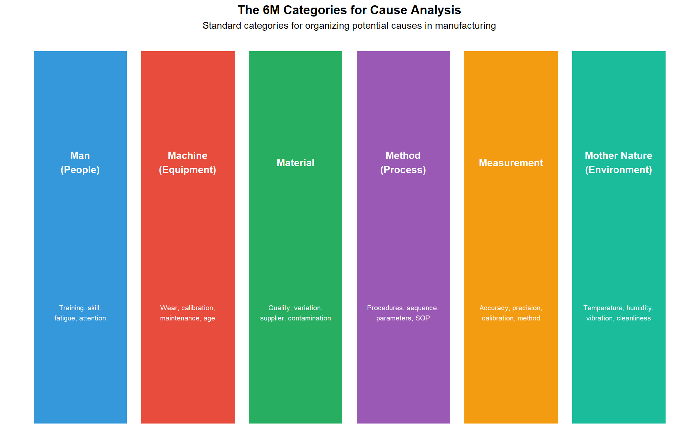
15.6.2 Constructing a Fishbone Diagram
Warning in geom_segment(data = spine, aes(x = x[1], y = y[1], xend = x[2], : All aesthetics have length 1, but the data has 2 rows.
ℹ Please consider using `annotate()` or provide this layer with data containing
a single row.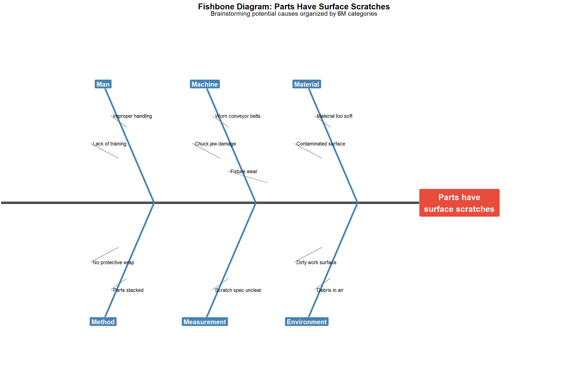
15.6.3 Fishbone Diagram Best Practices
| Guideline | Description |
|---|---|
| Team Approach | Include operators, engineers, maintenance, quality - diverse perspectives |
| No Evaluation During Brainstorming | Capture all ideas first; evaluate feasibility later |
| Use Specific Language | Not 'machine problem' but 'bearing wear on spindle motor' |
| Aim for 3-5 Causes per Category | Some categories may have more; don't force causes into categories |
| Circle the Most Likely | After brainstorming, identify 2-3 most probable causes to investigate |
| Verify with Data | Don't assume - test hypotheses with data before implementing fixes |
15.6.4 Video: How to Create a Fishbone Diagram
15.7 Fault Tree Analysis (FTA)
Fault Tree Analysis is a top-down, deductive analysis method that uses Boolean logic to analyze undesired events. Originally developed for the aerospace industry, FTA is particularly useful for complex systems with multiple potential failure paths.
15.7.1 FTA Symbols
| Symbol | Name | Meaning | Example |
|---|---|---|---|
| Rectangle | Intermediate Event | A fault event that results from combination of other events | Pump fails to deliver flow |
| Circle | Basic Event | A basic failure that cannot be broken down further | Motor winding burnout |
| Diamond | Undeveloped Event | Event not analyzed further (outside scope or insufficient data) | Power grid failure |
| House | Normal Event | An event expected to occur during normal operation | Normal wear over time |
| AND Gate | AND Gate | Output occurs only if ALL inputs occur | Both sensor AND controller fail |
| OR Gate | OR Gate | Output occurs if ANY input occurs | Either fuse blows OR breaker trips |
15.7.2 FTA Example: Pump Fails to Deliver Flow
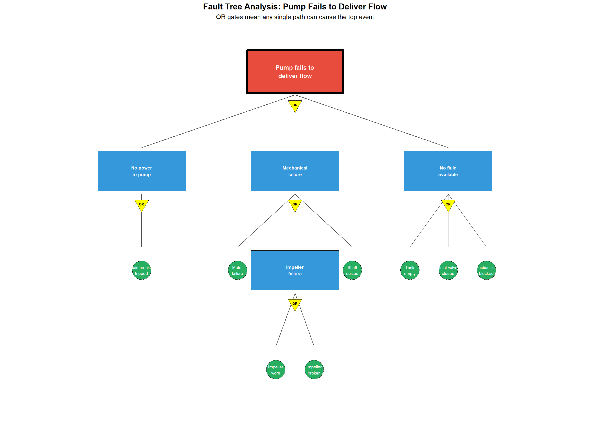
15.7.3 Calculating Probability with FTA
FTA allows quantitative risk analysis by calculating the probability of the top event:
OR Gate: P(output) = 1 - [(1 - PA) × (1 - PB) × …] Simplified: P(output) ≈ PA + PB (when probabilities are small)
AND Gate: P(output) = PA × PB × …
# Example: Calculate top event probability
# Basic event probabilities (annual failure rates)
P_breaker_trip <- 0.02
P_motor_fail <- 0.01
P_impeller_worn <- 0.03
P_impeller_break <- 0.005
P_shaft_seize <- 0.008
P_tank_empty <- 0.05
P_valve_closed <- 0.01
P_line_blocked <- 0.02
# Impeller failure (OR gate)
P_impeller_fail <- 1 - (1 - P_impeller_worn) * (1 - P_impeller_break)
cat("P(Impeller failure):", round(P_impeller_fail, 4), "\n")P(Impeller failure): 0.0349 # Mechanical failure (OR gate)
P_mechanical <- 1 - (1 - P_motor_fail) * (1 - P_impeller_fail) * (1 - P_shaft_seize)
cat("P(Mechanical failure):", round(P_mechanical, 4), "\n")P(Mechanical failure): 0.0521 # No fluid available (OR gate)
P_no_fluid <- 1 - (1 - P_tank_empty) * (1 - P_valve_closed) * (1 - P_line_blocked)
cat("P(No fluid available):", round(P_no_fluid, 4), "\n")P(No fluid available): 0.0783 # Top event: Pump fails (OR gate)
P_top <- 1 - (1 - P_breaker_trip) * (1 - P_mechanical) * (1 - P_no_fluid)
cat("P(Pump fails to deliver flow):", round(P_top, 4), "\n")P(Pump fails to deliver flow): 0.1438 cat("This represents a", round(P_top * 100, 1), "% annual probability of failure")This represents a 14.4 % annual probability of failure15.8 Pareto Analysis
Pareto Analysis is based on the Pareto Principle (80/20 rule): roughly 80% of effects come from 20% of causes. This helps prioritize problem-solving efforts.
15.8.1 Creating a Pareto Chart
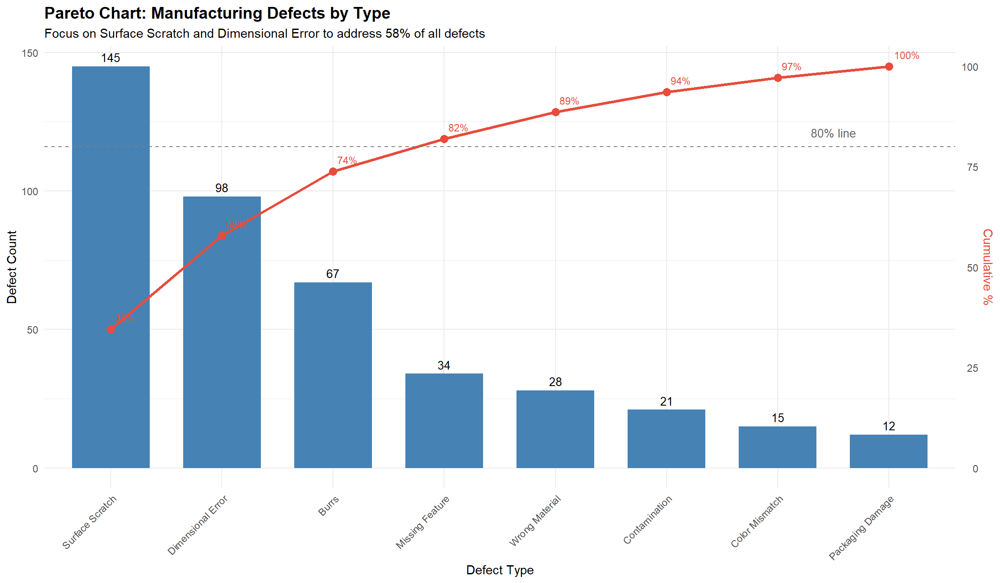
15.8.2 Interpreting Pareto Analysis
# Pareto analysis interpretation
defects <- data.frame(
Defect = c("Surface Scratch", "Dimensional Error", "Burrs",
"Missing Feature", "Wrong Material", "Contamination",
"Color Mismatch", "Packaging Damage"),
Count = c(145, 98, 67, 34, 28, 21, 15, 12)
)
defects <- defects[order(-defects$Count),]
defects$Cumulative_Pct <- cumsum(defects$Count) / sum(defects$Count) * 100
# Identify the "vital few" (those that contribute to 80%)
vital_few <- defects[defects$Cumulative_Pct <= 80 |
c(TRUE, defects$Cumulative_Pct[-nrow(defects)] < 80),]
cat("Total defects:", sum(defects$Count), "\n")Total defects: 420 cat("\nVital Few (contributing to ~80% of defects):\n")
Vital Few (contributing to ~80% of defects):print(vital_few[, c("Defect", "Count", "Cumulative_Pct")]) Defect Count Cumulative_Pct
1 Surface Scratch 145 34.52381
2 Dimensional Error 98 57.85714
3 Burrs 67 73.80952
4 Missing Feature 34 81.90476cat("\nFocusing on these", nrow(vital_few), "defect types addresses",
round(max(vital_few$Cumulative_Pct), 1), "% of all defects")
Focusing on these 4 defect types addresses 81.9 % of all defects15.8.3 Stratified Pareto Analysis
Sometimes you need to break down categories further:
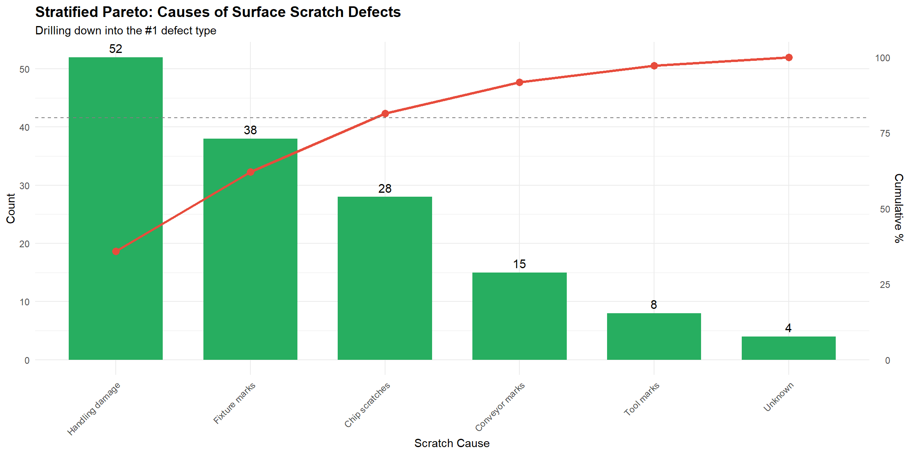
15.9 Is/Is Not Analysis
Is/Is Not Analysis is a structured comparison technique that helps narrow down the scope and identify distinguishing factors of a problem.
15.9.1 Is/Is Not Matrix
| Dimension | Question | IS | IS NOT | What's Different? |
|---|---|---|---|---|
| WHAT | What object has the problem? | Motor on Line 3 | Motors on Lines 1, 2, 4 | Line 3 motor is older, different model |
| WHAT | What is the defect/symptom? | Overheating (85°C) | Noise, vibration, or failure | Thermal issue, not mechanical yet |
| WHERE | Where is the problem observed? | Packaging area, Station 4 | Any other station | Station 4 has higher load demand |
| WHERE | Where on the object is the defect? | Motor housing, bearing end | Drive end, junction box | Bearing end runs hotter normally |
| WHEN | When was it first observed? | Monday morning shift | Before weekend (Friday OK) | Something changed over weekend |
| WHEN | When in the process/cycle? | After 2 hours of operation | Cold start or end of shift | Heat buildup issue |
| EXTENT | How many units affected? | 100% - every shift | Intermittent | Consistent problem |
| EXTENT | Is it trending up/down/stable? | Stable - same every day | Getting worse over time | Stable - not progressive failure |
15.9.2 Key Insights from Is/Is Not Analysis
From the example above, we can identify:
- Line 3 specific - Not a general problem across all lines
- Thermal, not mechanical - Overheating but no noise/vibration yet
- After warm-up - Heat accumulation issue
- Started after weekend - Something changed
Investigation focus: What changed over the weekend? Check maintenance logs, any work done on Line 3, any environmental changes.
15.10 The 8D Problem-Solving Methodology
The 8D (Eight Disciplines) methodology is a comprehensive problem-solving approach developed by Ford Motor Company. It’s widely used in automotive and other industries.
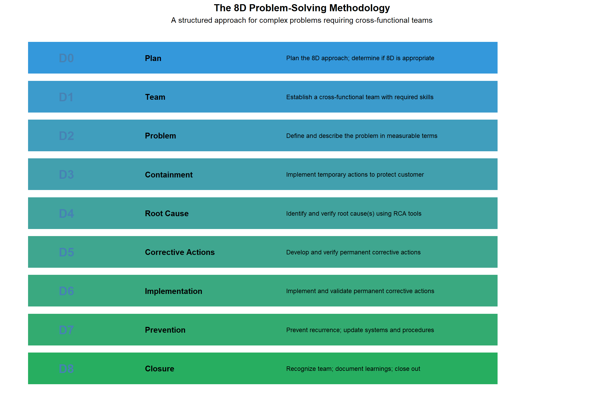
15.10.1 Detailed 8D Steps
| Discipline | Key Activities | Deliverables |
|---|---|---|
| D0: Plan | Emergency response actions, initial assessment, determine if 8D needed | 8D initiation decision, emergency actions |
| D1: Team | Select team leader, identify required expertise, define roles | Team charter, member list with expertise |
| D2: Problem | 5W2H, Is/Is Not, quantify impact, identify affected parts/lots | Problem statement, scope definition |
| D3: Containment | Sort suspect material, increase inspection, alert downstream | Containment actions, protected customer |
| D4: Root Cause | 5 Whys, Fishbone, FTA, verify cause by testing | Verified root cause(s) |
| D5: Corrective Actions | Brainstorm solutions, verify effectiveness before full rollout | Verified corrective action plan |
| D6: Implementation | Execute action plan, validate results, monitor KPIs | Implemented actions, validated results |
| D7: Prevention | Update FMEAs, procedures, training, share across organization | Updated procedures, similar problem prevention |
| D8: Closure | Final documentation, lessons learned, team recognition | 8D report, closed status |
15.10.2 D3: Containment Actions
Containment is crucial to protect the customer while you investigate:
| Type | Description | Example |
|---|---|---|
| Sort & Inspect | 100% inspection of suspect inventory to separate good from bad | Inspect all parts from Lot 2024-0215 |
| Rework/Repair | Repair nonconforming units if possible and economical | Re-machine undersize diameters to specification |
| Scrap | Dispose of units that cannot be repaired | Dispose of parts with cracks |
| Hold/Quarantine | Prevent movement of suspect material until disposition | Tag and segregate all parts from affected shift |
| Increase Monitoring | Add inspections, increase sampling, tighten control limits | Add 100% visual inspection at Pack station |
| Supplier Notification | Notify suppliers if incoming material is suspected | Request material certification from steel supplier |
| Customer Alert | Alert customers to check their inventory if product shipped | Contact distributor about potentially affected batch |
15.11 Corrective Action Implementation
Effective corrective actions address the root cause and prevent recurrence.
15.11.1 Types of Corrective Actions
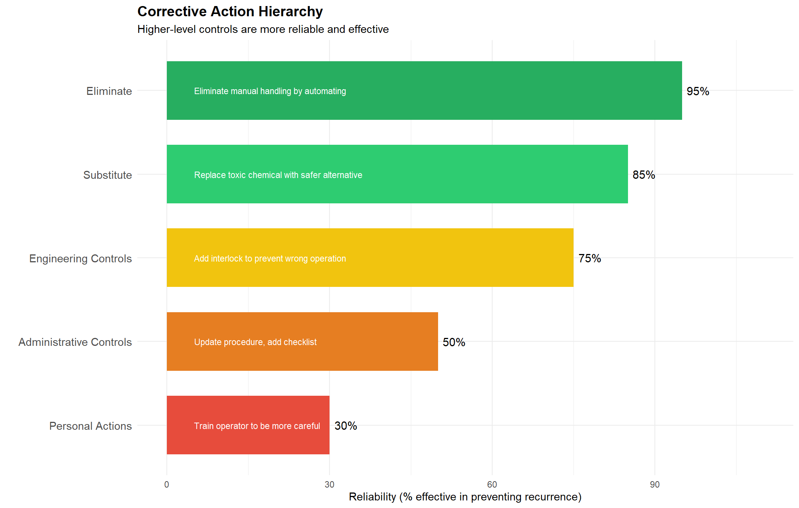
15.11.2 SMART Corrective Actions
Corrective actions should be SMART:
| Meaning | Description | Poor Example | Good Example | |
|---|---|---|---|---|
| S | Specific | Clearly defined action, not vague | Improve quality | Install poka-yoke sensor on Station 3 to detect missing holes |
| M | Measurable | Can verify completion and effectiveness | Train operators | Train all operators on new SOP-234 with signed competency verification |
| A | Achievable | Realistic with available resources | Redesign entire product line | Add inspection step (1 min/part) with existing CMM capacity |
| R | Relevant | Directly addresses the root cause | Repaint the floor | Add check fixture to verify hole position before assembly |
| T | Time-bound | Has a target completion date | Do this sometime soon | Complete by March 15, 2024 |
15.12 Verification and Validation
Before closing out a problem, verify that your actions worked.
15.12.1 Verification vs. Validation
| Aspect | Verification | Validation |
|---|---|---|
| Definition | Did we implement the action correctly? | Did the action solve the problem? |
| Focus | Process compliance | Results and effectiveness |
| Question | Did we build the fix right? | Did we build the right fix? |
| Timing | During/after implementation | After implementation, during monitoring |
| Methods | Audits, inspections, checklists | Data analysis, trend charts, capability studies |
15.12.2 Effectiveness Monitoring
Warning in scale_x_date(): A <numeric> value was passed to a Date scale.
ℹ The value was converted to a <Date> object.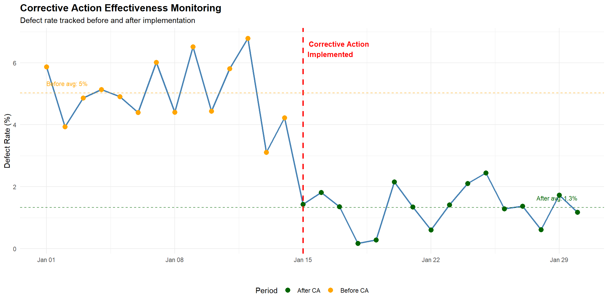
# Calculate improvement
before_avg <- mean(defect_rate[1:14])
after_avg <- mean(defect_rate[15:30])
improvement <- (before_avg - after_avg) / before_avg * 100
cat("Before corrective action: ", round(before_avg, 2), "% defect rate\n")Before corrective action: 5.03 % defect ratecat("After corrective action: ", round(after_avg, 2), "% defect rate\n")After corrective action: 1.33 % defect ratecat("Improvement: ", round(improvement, 1), "% reduction\n")Improvement: 73.5 % reduction15.13 Case Study: Automotive Welding Defects
Let’s work through a comprehensive troubleshooting case using multiple RCA tools.
15.13.1 The Problem
A Tier-1 automotive supplier is experiencing weld porosity defects on a critical structural component. Customer complaints have increased, and the plant has received a quality alert.
15.13.2 Initial Problem Definition (5W2H)
| Question | Details |
|---|---|
| WHAT | Porosity (gas pockets) in MIG welds on crossmember subassembly |
| WHERE | Robot welding Cell 4, occurring at weld joint W-23 (corner weld) |
| WHEN | Started approximately 2 weeks ago, occurs on all shifts |
| WHO | Detected by customer during their incoming inspection |
| WHY | Customer rejecting parts; risk of production line stop |
| HOW | Visible voids on X-ray inspection; some visible to naked eye |
| HOW MUCH | Estimated 8% of parts affected (up from baseline of 0.5%) |
15.13.3 5 Whys Analysis
| Level | Finding |
|---|---|
| Problem | Porosity in welds at joint W-23 |
| Why #1 | Gas entrapment during solidification |
| Why #2 | Inadequate shielding gas coverage |
| Why #3 | Gas flow rate dropped below specification |
| Why #4 | Flow meter was not calibrated; showing higher than actual |
| Why #5 | No calibration schedule existed for welding gas flow meters |
15.13.4 Fishbone Diagram Findings
After brainstorming with the cross-functional team:
| Category | Potential Cause | Likelihood | Verification Result |
|---|---|---|---|
| Machine | Gas flow meter out of calibration | HIGH | YES - Root cause |
| Machine | Worn contact tip affecting arc stability | Medium | No - tips OK |
| Material | Different wire lot from new supplier | Medium | No - tested OK |
| Material | Base metal surface contamination | Low | No - clean parts |
| Method | Robot path too fast for corner weld | Medium | Partial contributor |
| Method | Gas pre-flow time insufficient | HIGH | YES - Contributing |
| Man | Recent operator turnover, less experience | Low | No - all shifts affected |
| Environment | Seasonal humidity changes | Low | No - controlled |
15.13.5 8D Report Summary
| D# | Discipline | Summary |
|---|---|---|
| D1 | Team | Team: Weld Engineer (lead), Quality, Maintenance, Production Supervisor, Supplier Quality |
| D2 | Problem | 8% porosity rate at W-23 joint since Jan 15; customer quality alert received Jan 28 |
| D3 | Containment | 100% X-ray inspection of all crossmembers; sort and quarantine 3 days production |
| D4 | Root Cause | Primary: Flow meter out of calibration (reading 25 CFH, actual 18 CFH). Contributing: Pre-flow time was 0.3s, spec requires 0.5s |
| D5 | Corrective Actions | 1. Recalibrate flow meter immediately; 2. Increase pre-flow time to 0.5s; 3. Add flow meter to calibration schedule |
| D6 | Implementation | Actions completed Feb 5; validation testing shows 0.1% porosity rate (below 0.5% target) |
| D7 | Prevention | Updated PM schedule to include all gas flow meters quarterly; added to PFMEA with RPN recalculation |
| D8 | Closure | Customer satisfied with response; 8D closed Feb 15; cost avoidance: $45,000 (avoided line stop) |
15.14 Documentation and Knowledge Management
Proper documentation ensures learnings are captured and problems don’t recur.
15.14.1 Key Documentation Elements
| Element | Contents | Benefit |
|---|---|---|
| Problem Description | 5W2H, problem statement, impact/cost | Clear reference for similar future problems |
| Timeline | When discovered, key investigation dates, implementation dates | Understanding of response time, identifying delays |
| Data Collected | Measurements, photos, test results, operator interviews | Evidence-based analysis, reference for future |
| Root Cause Analysis | 5 Whys, fishbone diagrams, FTA as applicable | Documented logical process, training material |
| Corrective Actions | Actions taken, responsible parties, target/actual dates | Accountability, closure verification |
| Verification Results | Before/after data, statistical comparison, effectiveness % | Proof of effectiveness, audit trail |
| Lessons Learned | What we'd do differently, recommendations for similar situations | Continuous improvement, organizational learning |
| System Updates | PFMEA updates, procedure changes, training records | Prevention of recurrence, compliance |
15.14.2 Creating a Troubleshooting Knowledge Base
Build organizational memory by:
- Standardized templates - Use consistent formats for all RCA documents
- Searchable database - Store in CMMS, SharePoint, or dedicated quality system
- Categories and tags - Equipment type, failure mode, root cause category
- Cross-references - Link related issues and solutions
- Regular reviews - Periodic analysis of trends and patterns
15.15 Troubleshooting Tools Quick Reference
| Tool | Best For | When to Use | Team Size |
|---|---|---|---|
| 5 Whys | Simple problems with linear cause chains | Quick investigations, starting point for analysis | 1-3 |
| Fishbone Diagram | Brainstorming multiple potential causes | Team problem-solving sessions | 4-8 |
| Fault Tree Analysis | Complex systems with multiple failure paths | Safety-critical systems, reliability analysis | 2-5 |
| Pareto Chart | Prioritizing which problems to tackle first | When facing multiple problems or defect types | 1-3 |
| Is/Is Not | Narrowing down scope and identifying distinctions | When problem is hard to define clearly | 2-4 |
| 8D | Customer complaints requiring formal response | Formal quality requirements, major issues | 5-10 |
| Change Analysis | Problems that started suddenly | When timing of problem onset is known | 1-4 |
15.16 Video Resources
15.16.1 Understanding 5 Whys
15.16.2 8D Problem Solving
15.17 Summary
Effective troubleshooting and root cause analysis require:
- Systematic approach - Don’t guess; follow a structured methodology
- Clear problem definition - Use 5W2H to clearly define what you’re solving
- Data-driven analysis - Collect facts before jumping to conclusions
- Root cause focus - Don’t stop at symptoms; dig to fundamental causes
- Multiple tools - Use 5 Whys, Fishbone, FTA, Pareto as appropriate
- Effective corrective actions - Aim for elimination, not just mitigation
- Verification - Confirm your fix actually works with data
- Documentation - Capture learnings to prevent recurrence
Remember: The goal isn’t just to fix today’s problem - it’s to prevent tomorrow’s.
15.18 Review Questions
Question 1: What is the difference between a symptom, immediate cause, and root cause? Provide an example of each for a machine that is producing parts with excessive surface roughness.
Answer:
- Symptom: The observable effect of the problem
- Example: Parts have Ra surface roughness of 3.2 μm when specification is 1.6 μm
- Immediate cause: The direct, technical cause of the symptom
- Example: Cutting tool is worn beyond its effective life
- Root cause: The fundamental reason that, if eliminated, prevents recurrence
- Example: No tool life monitoring system exists; operators judge tool changes by intuition rather than data
Question 2: A food processing plant is experiencing frequent jams on their packaging line. Perform a 5 Whys analysis given the following information: The jam occurs at the carton loading station, started last week, happens 4-5 times per shift, and the maintenance team found the timing of the pusher mechanism is off.
Answer:
- Problem: Carton loading station jams 4-5 times per shift
- Why #1: Cartons are not in position when pusher activates → Timing mismatch
- Why #2: Pusher timing is off by approximately 0.3 seconds
- Why #3: Timing adjustment was changed during last week’s maintenance
- Why #4: Technician didn’t have correct specification for timing setting
- Why #5: Maintenance procedure doesn’t include timing specifications
Root Cause: Maintenance procedures lack critical parameter specifications
Corrective Actions: - Update maintenance procedure with correct timing specification (180ms ± 10ms) - Restore timing to correct setting immediately - Review other procedures for missing specifications - Add parameter verification checklist to PM activitiesQuestion 3: Create a fishbone diagram outline (list the potential causes under each 6M category) for the problem “CNC machine producing parts 0.05mm oversize.”
Answer:
MAN (People) - Operator entered wrong offset - Incorrect setup procedure followed - Inadequate training on new program - Fatigue/distraction during setup
MACHINE (Equipment) - Spindle thermal growth - Ballscrew wear/backlash - Tool holder runout - Axis positioning error
MATERIAL - Material hardness variation - Different lot from supplier - Material springback - Incorrect material grade
METHOD (Process) - Wrong tool offset entered - Program error in G-code - Incorrect cutting parameters - Missing roughing pass
MEASUREMENT - Gauge out of calibration - Wrong measurement technique - Temperature affecting measurement - Incorrect datum reference
MOTHER NATURE (Environment) - Shop temperature variation - Coolant temperature change - Vibration from nearby equipment - Humidity affecting gaugesQuestion 4: Given the following defect data from a sheet metal stamping operation, create a Pareto analysis and identify the vital few defects to focus on.
| Defect Type | Count |
|---|---|
| Scratches | 89 |
| Burrs | 156 |
| Wrinkles | 45 |
| Splits/Cracks | 28 |
| Dimensional | 112 |
| Surface Dents | 67 |
| Missing Features | 18 |
Answer:
# Create and analyze the data
defects <- data.frame(
Type = c("Burrs", "Dimensional", "Scratches", "Surface Dents",
"Wrinkles", "Splits/Cracks", "Missing Features"),
Count = c(156, 112, 89, 67, 45, 28, 18)
)
# Sort by count descending
defects <- defects[order(-defects$Count),]
# Calculate percentages
defects$Percent <- defects$Count / sum(defects$Count) * 100
defects$Cumulative <- cumsum(defects$Percent)
# Display results
print(defects) Type Count Percent Cumulative
1 Burrs 156 30.291262 30.29126
2 Dimensional 112 21.747573 52.03883
3 Scratches 89 17.281553 69.32039
4 Surface Dents 67 13.009709 82.33010
5 Wrinkles 45 8.737864 91.06796
6 Splits/Cracks 28 5.436893 96.50485
7 Missing Features 18 3.495146 100.00000# Identify vital few
vital_few <- defects$Type[defects$Cumulative <= 80 |
c(TRUE, defects$Cumulative[-nrow(defects)] < 80)]
cat("\nVital Few (contributing to ~80%):", paste(vital_few, collapse = ", "))
Vital Few (contributing to ~80%): Burrs, Dimensional, Scratches, Surface DentsQuestion 5: What are the key differences between verification and validation in the context of corrective actions?
Answer:
| Aspect | Verification | Validation |
|---|---|---|
| Question asked | Did we implement the action correctly? | Did the action solve the problem? |
| Focus | Process compliance | Results/outcomes |
| Timing | During/immediately after implementation | Ongoing monitoring after implementation |
| Methods | Audits, checklists, inspections | Data analysis, trend charts, SPC |
| Example | Confirm new sensor was installed per specification | Measure defect rate over 30 days to confirm reduction |
Verification confirms the action was done right. Validation confirms we did the right action.
Both are required - an action can be implemented perfectly (verified) but still not solve the problem (not validated).Question 6: An aerospace manufacturer has a requirement to use the 8D methodology for customer complaints. What happens in D3 (Containment) and why is it critical?
Answer:
D3 Containment Actions protect the customer while the root cause investigation continues. Key activities include:
- Immediate actions:
- Quarantine suspect inventory (tagged, segregated)
- 100% inspection of suspect lots
- Increase monitoring at subsequent operations
- Sort parts at customer location if already shipped
- Documentation:
- Identify affected lot numbers, date codes, serial numbers
- Quantify the scope of potential exposure
- Document all containment actions taken
- Communication:
- Notify customer of actions being taken
- Alert downstream operations
- Inform suppliers if incoming material involved
Why critical: - Prevents additional defective product from reaching the customer - Limits the scope of the problem (cost, liability) - Demonstrates responsiveness to customer - Buys time for proper root cause investigation - In aerospace, safety-of-flight concerns make containment essential
Without effective containment, the problem continues while you investigate, increasing customer impact and costs exponentially.Question 7: Why might a team’s 5 Whys analysis stop too early? What are signs that you haven’t reached the true root cause?
Answer:
Reasons teams stop too early: 1. Blame arrives - Analysis ends at “operator error” without asking why the error occurred 2. Comfort zone - Team stops when they reach a cause they can easily fix 3. Time pressure - Rush to implement a fix, skipping deeper analysis 4. Technical limit - Team lacks expertise to go deeper into certain areas 5. Defensiveness - Reaching causes that implicate management or systems creates resistance
Signs you haven’t reached root cause: 1. Recurrence - If the fix is “more training” or “be more careful,” problem will return 2. Human-based answer - Root causes should typically be systems/processes, not individuals 3. No prevention mechanism - If fixing this cause doesn’t prevent future occurrences, keep asking why 4. Can still ask “why?” - If there’s a logical next level to investigate 5. Administrative fix only - If the solution is just a procedure or checklist with no engineering controls
Example of stopping too early: - Stopping at: “Operator set wrong parameter” - Should continue: Why? → No parameter sheet at workstation → Why? → No standard work documentation exists → Root cause: Missing standardized work process
The true root cause typically relates to systems, processes, or management decisions rather than individual actions.Question 8: Describe how you would use Pareto analysis in a stratified manner to drill down into a quality problem.
Answer:
Stratified Pareto Analysis involves creating multiple levels of Pareto charts, progressively drilling down into the vital few categories.
Example: High scrap rate at a machining shop
Level 1: Scrap by defect type 1. Create Pareto of all defect types 2. Result: “Dimensional errors” is 45% of all scrap - investigate this first
Level 2: Dimensional errors by machine 1. Create Pareto of dimensional errors broken down by machine 2. Result: Machine #4 accounts for 60% of dimensional errors
Level 3: Machine #4 dimensional errors by feature 1. Create Pareto of which dimensions are failing on Machine #4 2. Result: Bore diameter is 70% of Machine #4 dimensional issues
Level 4: Bore diameter issues by shift/operator 1. Create Pareto by shift 2. Result: Evenly distributed - not operator-dependent (machine issue confirmed)
Final Analysis: Investigate boring operation on Machine #4 specifically - likely tool wear, spindle issue, or program error.
The stratified approach efficiently narrows focus from “we have a scrap problem” to “boring operation on Machine #4 has a systematic error.”Question 9: A defense contractor needs to analyze a safety-critical failure. Why might Fault Tree Analysis (FTA) be preferred over simpler methods like 5 Whys?
Answer:
FTA advantages for safety-critical analysis:
- Handles complexity:
- Safety-critical systems often have multiple redundancies and complex failure paths
- FTA can model combinations of events that must occur together (AND gates) or alternatively (OR gates)
- 5 Whys follows single linear path; FTA captures parallel paths
- Quantitative capability:
- FTA allows probability calculations for top event
- Can identify minimum cut sets (smallest combinations that cause failure)
- Supports reliability and safety integrity level (SIL) calculations
- Defense/aerospace require quantitative risk assessment
- Documentation requirements:
- Regulatory bodies (FAA, DoD) often require FTA for critical systems
- Provides auditable, traceable analysis
- Standard symbols and methodology
- Identifies hidden failures:
- Can reveal single points of failure
- Shows where redundancy is (or isn’t) effective
- Identifies common cause failures that defeat redundancy
- Design improvement:
- Visual representation helps identify where to add safeguards
- Sensitivity analysis shows which basic events most affect risk
- Supports design reviews and safety cases
15.19 References
Latino, R.J., Latino, K.C., & Latino, M.A. (2019). Root Cause Analysis: Improving Performance for Bottom-Line Results (5th ed.). CRC Press.
Okes, D. (2019). Root Cause Analysis: The Core of Problem Solving and Corrective Action (2nd ed.). ASQ Quality Press.
Andersen, B., & Fagerhaug, T. (2006). Root Cause Analysis: Simplified Tools and Techniques (2nd ed.). ASQ Quality Press.
AIAG. (2018). CQI-20: Effective Problem Solving Guide. Automotive Industry Action Group.
IEC 61025:2006. Fault Tree Analysis (FTA). International Electrotechnical Commission.
Ishikawa, K. (1990). Introduction to Quality Control. 3A Corporation.
Juran, J.M. (1988). Juran on Planning for Quality. Free Press.
Ford Motor Company. (2019). Global 8D Problem Solving Manual. Ford Motor Company.
NASA. (2002). Fault Tree Handbook with Aerospace Applications. NASA Office of Safety and Mission Assurance.
Wilson, P.F., Dell, L.D., & Anderson, G.F. (1993). Root Cause Analysis: A Tool for Total Quality Management. ASQ Quality Press.